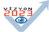

|
Tasarým
Teknolojileri Strateji Grubu
Aðustos 2004, ANKARA
Koordinatör
Doç.Dr. Serdar Çelebi, ÝTÜ Biliþim Enstitüsü
Raportörler
Ömer Hakan Okutan, Arçelik Çamaþýr Makinesi Ýþletmesi
Ayþegül Yýlmaz, TÜBÝTAK BTP
Üyeler
Ömer Akbaþ, Arçelik Ar-Ge
Elif Baktýr, ASELSAN MST Grubu
Prof.Dr. Sedat Bayseç, Gaziantep Üniv., Makine Mühendisliði
Böl.
Refik
Diri, Karel Kalýp A.Þ.
Prof.Dr. Abdülkerim Kar, Marmara Üniv., Müh. Fak., Makina
Böl.
Burak Kýray, Ford Otosan
Aydýn Kuntay, Bias Müh.
Uður Oksay, ETA A.Þ.
Dr. Tarýk Öðüt, FÝGES A.Þ.
Burak Pekcan, ÝnfoTRON A.Þ.
Uður Sarýbay, SATEK
Tuðrul Tekbulut, Logo LBS
Refik Üreyen, TTGV
1. GÝRÝÞ
Ülkemizin
rekabetçi gücünün geliþtirilebilmesi ve sürdürülebilir kalkýnmasýný
ivmelendirerek arttýrabilmesi için teknoloji üretmesi ve bunu
pazarlayabilmesi þarttýr. Bu baðlamda tasarým teknolojilerinin
problem çözmeye, üretime ve ürün geliþtirmeye, teknoloji oluþturmaya
ve katma deðeri arttýrmaya yönelik çok temel bir rolü vardýr.
Tasarým teknolojilerinin bu birincil öneminin yanýsýra diðer
strateji alanlarý ile irili ufaklý önemli arakesitleri bulunmaktadýr.
Tasarým teknolojilerinde gerçekleþtirilecek temel yatýrýmlar,
Türkiye'de özellikle otomotiv, havacýlýk, denizcilik, savunma,
elektronik, beyaz esya, týp, biyoteknoloji, iletiþim, elektrik-elektronik,
haberleþme, makina ve enerji sektörleri baþta olmak üzere
hemen hemen tüm üretim sektörlerini etkileyebilecektir. Bu
sebeple tasarým teknolojilerine yönelik kýsa, orta ve uzun
vadeli ivedilikle yapýlmasý gereken düzenleme ve yatýrýmlar
en kýsa sürede uygulamaya konmalýdýr.
Tasarým,
çok geniþ bir çerçevede üretilecek bir malýn, ürünün ve hizmetin
veya bir problemin modellenmesinin planlanmasýdýr diyebiliriz.
Bu anlamda tasarýmý oluþturan alt unsurlarý: bilgisayar destekli
tasarým, bilgisayar destekli üretim, bilgisayar destekli mühendislik
ve süreç otomasyonu ile geliþtirme ve benzetim araçlarý, yazýlým
ve yazýlým tasarýmý teknolojileri olarak sýralayabiliriz.
Ülkemizin bu teknolojilere etkin bir þekilde sahip olmasý
durumunda baþta sanayi üretimi olmak üzere geliþtirilecek
tüm ürünlerde kendi tasarýmýný ve buna baðlý rekabet gücünü
geliþtirmesi ve bunun sonucu olarak dünyadaki pazar payýný
arttýrmasý mümkün olacaktýr. Bizim geliþmiþlik düzeyimizdeki
tüm ülkeler bu gerçek ýþýðýnda tasarým teknolojilerine referans
veren tüm alt alanlarda orta ve uzun vadeli stratejik yatýrýmlarýný
ve kurumsal yapýlarýný kurmuþlar veya kurmaktadýrlar.
Genel
olarak tüm üretim süreçlerinde tasarýmýn var olduðunu söyleyebiliriz,
özellikle bilgisayar ve biliþim teknolojilerinin imkanlarý
ile birlikte tasarým günümüzde aðýrlýðýný hemen hemen tüm
sektörlerde hissettirmeye baþlamýþtýr. Gelecekte bu etkinin
bilgisayar ve biliþim teknolojilerinin geliþme hýzýna parallel
olarak artacaðý ve hemen her alana gireceði öngörülmektedir.
Türkiye'nin
tasarým alanýndaki 2023 hedefi "Kendi teknolojisini üretmek
ve katma deðeri yüksek teknoloji ürünlerini rekabetçi pazarlarda
satabilmek"tir.
Bu
hedefe yönelik temel aþamalar þöyledir:
2010
yýlýnda; interval aritmetik, puslu mantik, genetik algoritmalar,
sayisal matematik teknikler, yapay us, kuvantum hesaplama,
uygulamali matematik ve geometrik modelleme alanlarinda universitelerde
uzun vadeli temel arastirmalari desteklemek ve tesvik etmek.
Servis ve altyapi yatirimlarina oncelik vererek ileri teknoloji
kullanabilir insan gucu ve tasarim araclarinin gelistirilmesi
desteklenmelidir. Bu amacla, Grid olusturma ve grid teknolojileri
uzerinden tasarim ve modelleme yapma, parallel ve dagitik
ortamda yazilim gelistirme, paralel veritabani algoritmalari,
cluster ve SMP (simetrik cok islemcili) bilgisayar yazilim
teknolojileri, nesne yonelimli programlama ve modelleme teknolojisi
ile canlandirim ve grafik tasarim teknolojilerinde uygulamali
ve sinai arastirmalar gerceklestirilmelidir. Destekleyici
unsurlar olarak endüstride görsel veri formatlarýnýn, simulasyon
ve iletisim standartlarýnýn belirlenmesine yonelik calismalar
tamamlanmalidir. Ayrica sektörel bazda istatistiksel bilgi
toplama yöntemlerinin geliþtirilmesi ve veri tabanlarýnýn
oluþturulmasý (tasarým ve tasarým geçerlemeye yönelik) tamamlanmalidir.
Bu tarih itibari ile Kontrol Sistem tasarýmý yeteneðinin geliþtirilmesi,
Kinematik sentez, hareket tasarýmý ve dinamik dengeleme tekniklerinin
makine tasarýmýnda yaygýn kullanýmý, Üretim süreçlerinde doðrulama
tekniklerinin geliþtirilmesi ve yaygýnlaþtýrýlmasý gerceklestirilmelidir.
Endustriye ust duzey modelleme ve tasarim kabiliyeti kazandiracak
bir "Ulusal Yuksek Basarimli Hesaplama Merkezi "
kurulmasi tamamlanmalidir.
2015
yýlýnda; temel arastirma alanlari desteklenmeye devam edilmeli,
temel arastirmalardan gelen bilgi birikimi sanal gerceklik,
ogrenen yazilimlar, orgusuz (meshless) sistemler, kimyasal
sureclerin hesaplamali modellenmesi alanlarinda uygulamali
arastirmalar gelistirilmeli ve tamamlanmalidir. Üretim süreçlerinde
doðrulama tekniklerinin geliþtirilmesi ve yaygýnlaþtýrýlmasý
saglanmalidir. Geliþtirilen bu teknolojileri kullanarak Ulusal
bir CFD (Computational Fluid Dynamics) yazýlým paketinin geliþtirilmesi,
Týp, mühendislik gibi tematik alanlarda ulusal gridlerin oluþturulmasý,
Sensör ve ortam modellemelerinin, sanal prototipleme yeteneginin,
bir ulusal kati cisim mekanigi modelleyicisinin geliþtirilmesi
ve endustride yaygýnlaþtýrýlmasý gerceklestirilmelidir.
Temel
ve uygulamali arastirma ve servis altyapi yatirimlarinin sonucunda
biyoinformatik, genetik modelleme ve simulasyonlari alaninda
buyuk olcekli endustrinin ihtiyaci olan uygulamalar gerceklestirilmelidir.
Uretilen yazilim ve sistemlerin %25'nin sýnai uygulamalarda
kullanilmasi saglanmalidir. 2023 yýlýnda; Sanal prototipleme
yeteneginin endustri tasariminda yaygin olarak kullanilmasi
gerceklenmelidir. Sirket bilgi birikimi tabani yazilimi yaygin
olarak kullanilmaya gecmelidir.
Ulusal
grid altyapisi kullanilarak ulke capinda universitelerin ve
buyuk sanayi kuruluslarinin arastirmalari yayginlastirilmalidir.
Grid agi uzerinden bilgi akisi cok hizli (Amerikada su anda
TeraByte seviyesinde) ve maliyeti dusuk sevide olmalidir.
Ulusal Veri merkezleri (diger deyisle yuksek basarimli hesaplama
merkezleri) ulkenin her bolgesinde yayginlasmis olmalidir.
Sanal
gerceklik yazilim paketleri tum farkli tasarim sureclerinde
hizli, ucuz ve yaratici olmalari nedeniyle vazgecilmez bir
arac olarak kullaniliyor olmalidir. Ýnterval aritmetik, sayisal
yontemler temel arastirmalari ve buna bagli gelistirilen CFD,
Kati cisim mekanigi, akustik ve titresim ulusal yazilimlari
surekli olarak gelistirilirken artik hemen hemen tum endustri
kuruluslarinda standart tasarim araci olarak devreye girmis
olmalidir. Endustrinin urun tasarim gucu artmis, ihracatinda
ileri teknoloji urunlerinin yeri ve katma degeri cok yuksek
urunlerin payi %50'den fazla seviyeye gelmis olmalýdir. Tum
bu konularin gerceklenebilmesi icin rapordada ifade edilecek
olan hukuki, idari ve finansal duzenlemeler ile insan kaynaklarina
yonelik politika onerilerimizin uygulamaya gecirilmesi gerekmektedir.
Hedefe
yönelik olarak yapýlmasý gerekenleri aþaðýdaki gibi sýnýflandýrabiliriz:
a) Eðitim ve insan kaynaklarýna yönelik çalýþmalar
b) Yasal ve düzenleyici politika önerileri
c) Finansman ve Mali Politikalar
d) Ulusal programlar ve projeler
e) Türkiyede tasarýmda öncelikli alanlar için gerekli alt
teknoloji alanlarý
f) Uzun vadeli düþünülmesi gereken temel ve uygulamalý alanlar
g) Kýsa vadeli yapýlmasý gereken çalýþmalar
Aþaðýda
verilecek olan asýl ve destekleyici yetkinlik kazanýlmasý
gereken alt alanlarda baþarýlý olabilmek için
yukarýdaki unsurlarýn göz önüne alýnmasý ve gerçekleþtirilmesi
gerekmektedir.
|